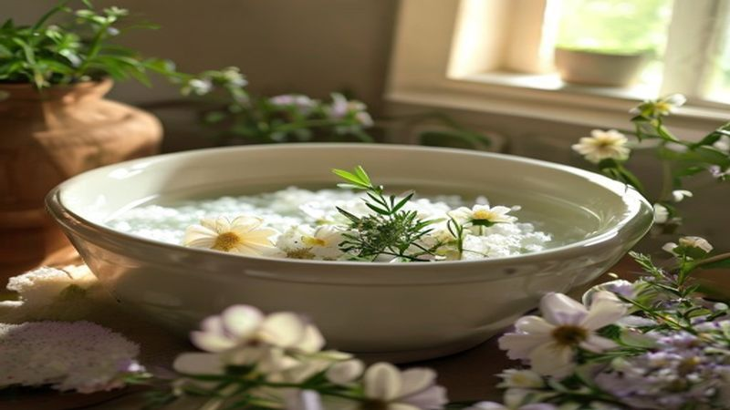

心と体をほどく、夜の「温活養生」。生薬とアロマで、わたしに戻るセルフケア
2026.05.28

毎日を忙しく過ごす中で、ふとした瞬間に手足の冷えや疲れ、心のこわばりを感じることはありませんか？
「もっと頑張らなきゃ」と、ついつい自分の心と体を後回しにしてしまいがち。そんなときこそ、植物のちからを借りて「わたしに戻る」時間を作ってあげましょう。
東洋医学に古くから伝わる「養生（ようじょう）」の考え方を取り入れた温活セルフケアは、体だけでなく心まで、じんわりと温かく満たしてくれます。今回は、100%天然・無添加にこだわった、おうちでできる夜の温活養生法をご紹介します。
1. なぜ今、「養生」が必要なのか？心と体をゆるめる温活の知恵
「養生」と聞くと、少し難しく感じるかもしれません。しかし、その本質はとてもシンプル。「自分の心と体の声に耳を傾け、本来の健やかさを整えること」です。
現代人は、エアコンによる冷えやストレス、スマートフォンの見すぎなどにより、自律神経が乱れやすい環境に置かれています。特に「冷え」は、血行を滞らせるだけでなく、心にまで「冷え（寂しさや不安）」をもたらすことがあります。まずは物理的に体を温めることから、心のアプローチを始めましょう。
巡りを整え、芯から温まる「生薬」のちから
冷え対策として有効なのが「温活」です。ただお風呂に入るだけでなく、自然の恵みを凝縮した「生薬（しょうやく）」を取り入れることで、温活の効果はさらに高まります。
生薬とは、植物の根や葉、果実などを乾燥させ、自然の薬効を引き出したもの。生薬を用いたお風呂は、その成分が皮膚からじんわりと吸収され、血行を促進し、体の芯からぽかぽかと温めてくれます。お風呂上がりも湯冷めしにくく、深い眠りへと導くのが特徴です。

2. 今日からできる、100%天然のセルフケア習慣
「自分をケアする」と決めても、特別なことを始める必要はありません。大切なのは、毎日使うものを「本物」にアップデートすること。私たちは、知らず知らずのうちに化学物質に囲まれて暮らしています。だからこそ、セルフケアの時間だけは、不要な添加物を含まない「100%天然」のものを選びたいものです。
五感を満たす、国産アロマと無添加入浴剤の選び方
無添加の生薬入浴剤は、植物の恵みをそのまま肌から取り入れることができるため、デリケートな肌の方でも安心して使えます。また、香りのアプローチも非常に重要です。
合成香料ではなく、天然のエッセンシャルオイル、特に日本人の遺伝子にしっくりと馴染む「国産アロマ（和の香り）」は、脳に直接働きかけ、緊張した自律神経を優しく解きほぐしてくれます。例えば、クロモジやヒノキ、柚子といった国産アロマは、どこか懐かしく、日本人の心に「フクフク」とした幸福感と安心感をもたらしてくれます。
Tips
入浴剤を選ぶときは、パッケージの裏面（成分表示）をチェックしてみましょう。合成着色料、合成香料、防腐剤などが含まれていない「完全無添加」のものを選ぶことで、肌にも地球にも優しい極上のセルフケアが実現します。fucuuの生薬入浴剤は、厳選された国産素材のみを使用し、余計なものは一切加えていません。
3. 「わたしに戻る」夜の特別なバスタイム・ルーティン
それでは、具体的に心と体をリセットする、夜の温活養生ルーティンをご紹介します。ただお湯に浸かるだけではない、マインドフルな時間。それが、fucuuが提案する「わたしに戻る」ための時間です。
スマートフォンを置いて、お湯の温度と香りに集中する
バスルームにスマートフォンを持ち込むのを、今夜は思い切ってやめてみませんか？照明をいつもより少し暗めに設定し、38度〜40度のややぬるめのお湯に、生薬入浴剤をそっと浮かべます。
- 香りを深く吸い込む：お湯に広がる生薬と国産アロマの豊かな香りを、深呼吸しながら体いっぱいに取り入れます。
- 手のひらでお湯の温かさを感じる：お湯に触れる肌の感覚に意識を向けます。「今日も一日、よく頑張ったね」と、心の中で自分に声をかけてあげましょう。
- 15分〜20分の入浴：じんわりと汗がにじむまで、ゆっくりとお湯に身を委ねます。

Tips
お風呂から上がった後は、水分補給を忘れずに。冷たい水ではなく、常温の水や白湯、温かいハーブティーを飲むことで、温まった体を内側からも優しく労わることができます。お布団に入る前のスマートフォンの操作も控えめにすると、生薬の温浴効果とアロマの相乗効果で、驚くほど深い眠りにつくことができますよ。
まとめ：「fucuu」とともに、自分を愛おしむ時間を。
日々の忙しさに追われ、自分を見失いそうになったとき。温かいお湯に生薬を浮かべ、豊かな香りに包まれる時間は、あなたに「わたしに戻る」道標を教えてくれます。
無添加・100%天然の優しさに包まれて、体の中を巡る温もりを感じる。そのとき、心の中には「フクフク」とした穏やかな幸福感が広がっているはずです。
今夜はいつもより少しだけ時間をとって、あなたのための「温活養生」を始めてみませんか？fucuuが、あなたの穏やかで温かい夜に、そっと寄り添います。
fucuuの生薬入浴剤・国産アロマは、BASEオンラインショップでご購入いただけます。
BASEで購入する